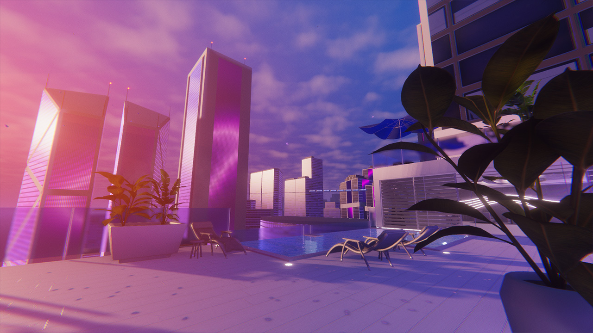
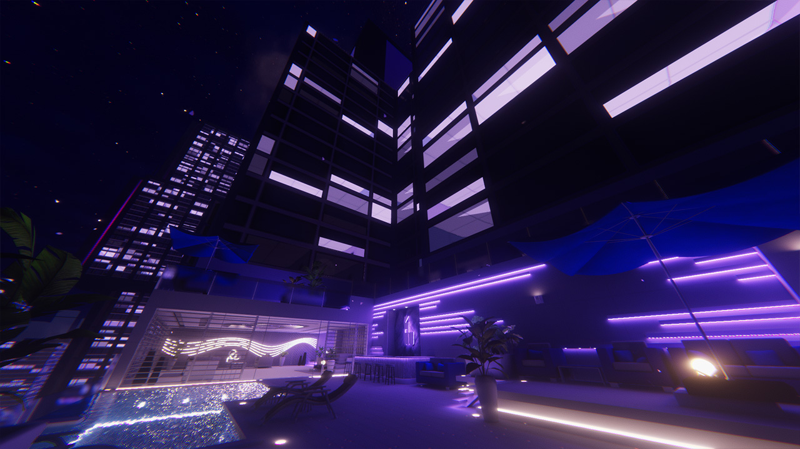
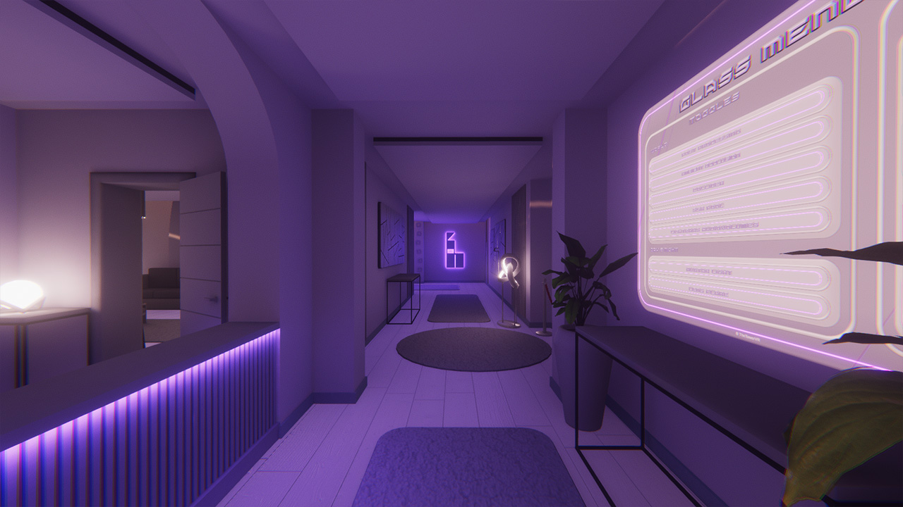
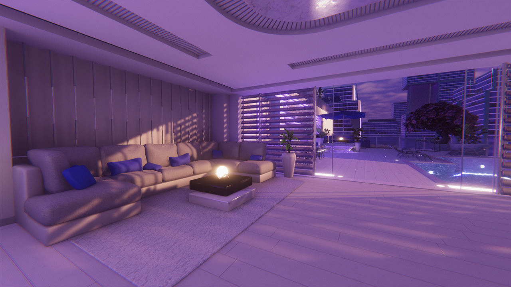
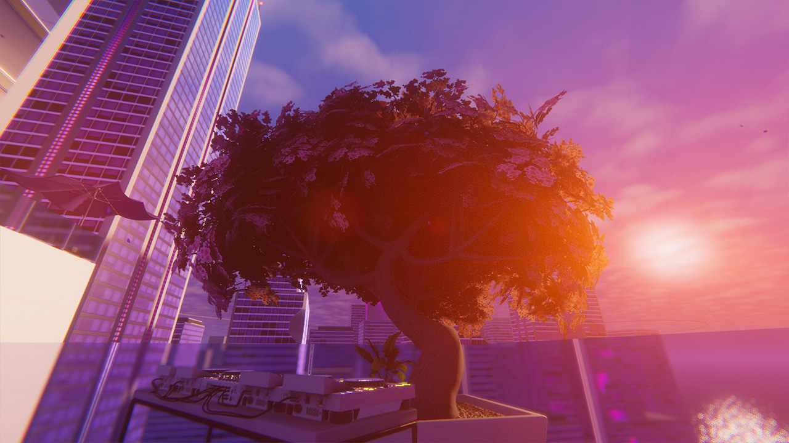
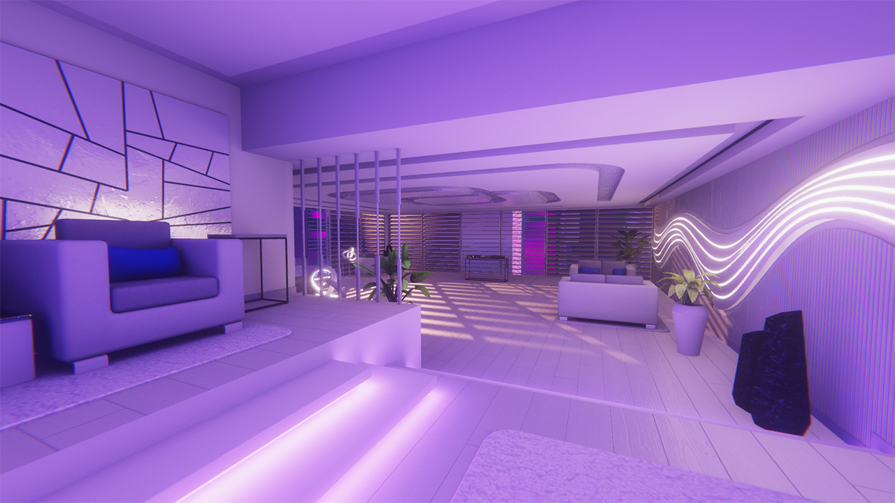

The Project
- Concept e Finalità: Fondato nell'estate del 2026 per rispondere a un'esigenza specifica della scena rave di VRChat, configurandosi come uno spazio immersivo domenicale dedicato al relax e al defaticamento post-evento.
- Ciclo Dinamico e Flow Musicale: Caratterizzato da un ciclo giorno-notte strutturato in tre fasi distinte (tramonto, notte, alba), progettato per creare un flusso sinergico continuo tra l'evoluzione visiva dell'ambiente e la selezione musicale.
- Realismo Visivo: Sviluppato con un focus estremo sul fotorealismo per massimizzare il livello di immersione e il coinvolgimento sensoriale degli utenti.
Glass Gallery






Visual Vision
Glass rappresenta la sintesi visiva di una ricerca estetica personale, fortemente ispirata al design e alle atmosfere di titoli come Mirror's Edge e a correnti culturali quali il Frutiger Aero, lo Y2K e il Solarpunk. Il progetto traduce in architettura virtuale il concetto del "futuro che ci era stato promesso": un universo visivo etereo ed essenziale, dominato da superfici bianche, linee pulite e panorami pacifici, strutturato per trasmettere un senso assoluto di ordine, luce e serenità.